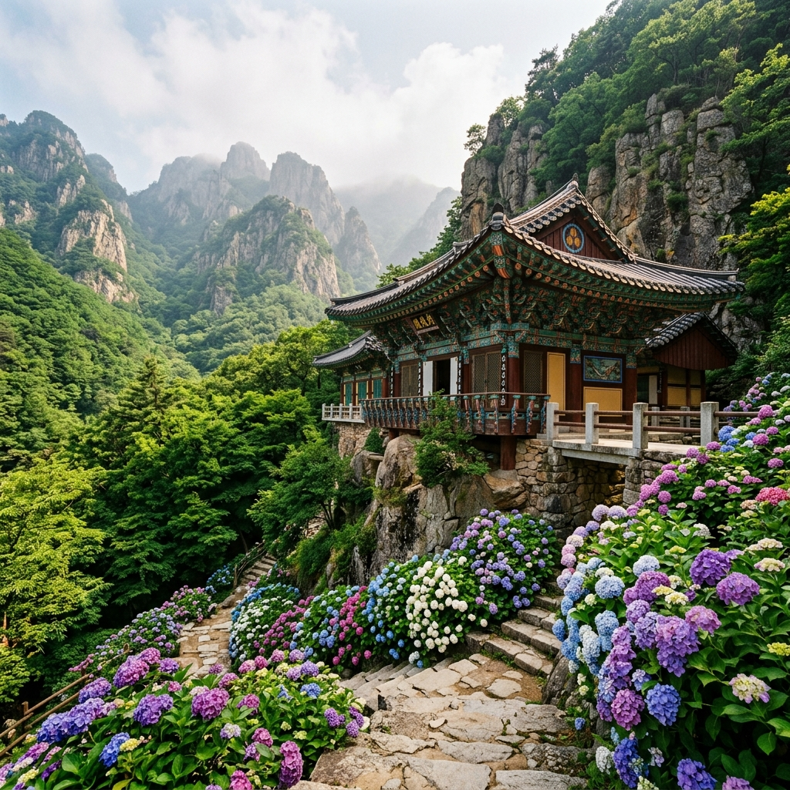
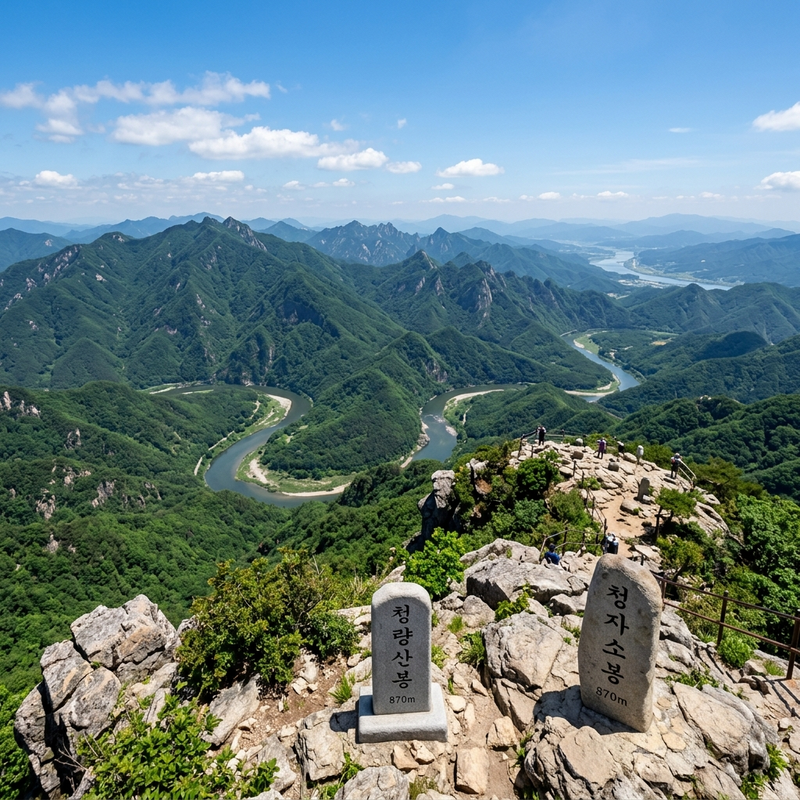

경상북도 봉화군과 안동시의 경계에 솟아있는 청량산은 이름처럼 맑고 서늘한 기운이 감도는 산입니다.
열두 봉우리가 병풍처럼 둘러선 모습은 육산(肉山)과는 전혀 다른 수직의 긴장감을 줍니다.
6월이면 등산로 주변으로 수국이 활짝 피고, 낙동강이 산 아래를 굽이쳐 흐르는 풍경이 어우러져 경이로운 절경을 만들어냅니다.
성리학의 거인 퇴계 이황이 수학하던 산에서 직접 걸어 확인한 생생한 후기를 전합니다.
청량산 도립공원은 경북 봉화군 명호면과 안동시 도산면의 경계에 걸쳐 있습니다.
조선 성리학의 선구자 퇴계 이황이 이 산 아래에서 학문을 닦았다는 사실은 청량산에 역사적 무게를 더합니다.
퇴계는 청량산을 평생 사랑한 산으로 여겼고, 그의 시문 곳곳에 청량산의 절경이 담겨 있습니다.
실제로 탐방로를 걷다 보면 곳곳에 퇴계와 관련된 안내판이 세워져 있어 등산이 곧 역사 기행이 됩니다.
산 전체가 수직으로 솟은 바위 봉우리들로 구성되어 있어 경사는 가파르지만, 그 대신 올라설 때마다 시야가 순간적으로 열리는 극적인 경험을 선사합니다.
기암절벽이 병풍처럼 서 있고 그 사이사이로 오래된 소나무와 참나무가 뿌리를 내린 풍경은 한 폭의 수묵화 같습니다.
입장료는 성인 1,000원으로 국내 도립공원 중 가장 저렴한 수준에 속합니다.
탐방지원센터에서 무료 안내 지도를 받을 수 있고, 계절별 탐방 주의 사항도 함께 안내해줍니다.
청량산은 유명세에 비해 방문객 수가 과하지 않아 주말에도 비교적 여유롭게 산길을 걸을 수 있다는 점이 큰 장점입니다.
청량산의 열두 봉우리는 오랜 세월 풍화와 침식을 거쳐 지금의 모습을 갖추게 된 경이로운 지질 유산입니다.
봉우리의 이름은 다음과 같습니다. 자소봉(870m, 최고봉), 탁필봉, 연적봉, 연화봉, 향로봉, 경일봉, 금탑봉, 축융봉, 청량봉, 탁립봉, 자란봉, 선학봉으로 구성됩니다.
각 봉우리의 이름은 그 형태에서 따온 것이 대부분으로, 탁필봉은 붓을 세워놓은 듯한 모양, 연화봉은 연꽃이 피어오르는 형상에서 이름이 유래했습니다.
주요 암석은 퇴적기원의 사암과 역암으로, 수억 년 전 바다 속에서 쌓인 퇴적층이 지각 운동으로 융기한 뒤 오랜 침식을 거쳐 절벽을 이루었습니다.
바위 표면에서 층리(層理)가 뚜렷하게 보이는 구간도 있어 지질학적으로도 흥미로운 관찰 대상이 됩니다.
절벽 아래 흐르는 낙동강은 오랜 시간 산의 기반을 깎아내며 지금의 U자형 굽이 지형을 만들었습니다.
자소봉 정상에서 내려다보면 낙동강이 산을 감싸 돌아가는 모습이 한눈에 들어오는데, 이 경관이 청량산을 찾는 가장 큰 이유 중 하나입니다.
지형의 특성상 청량산은 비가 온 뒤 운무가 피어오르는 날이 특히 아름답습니다.
봉우리들 사이로 구름이 걸리면 전설 속 선경(仙境)이 따로 없다는 말이 실감납니다.
6월의 청량산은 두 가지 요소가 겹쳐 시각적 완성도를 극대화합니다.
하나는 신록이고, 다른 하나는 수국입니다.
등산로 초입부터 청량사 주변에 이르기까지 곳곳에 수국이 무리 지어 피어 있는데, 빛의 강도에 따라 보라, 파랑, 분홍으로 변하는 색감이 회색 바위와 대비를 이루며 매우 강렬한 인상을 남깁니다.
청량사 경내에 피어난 수국은 고풍스러운 전각과 어우러져 가장 사진이 잘 나오는 스폿으로 손꼽힙니다.
수국 외에도 6월에는 산 전체가 짙은 녹음으로 뒤덮여 어느 방향으로 카메라를 들어도 초록이 터질 듯 가득합니다.
고도가 높아질수록 나무들의 키가 낮아지고 시야가 열리면서 멀리 보이는 굽이치는 낙동강과 그 너머 펼쳐진 구릉 지대가 파노라마처럼 펼쳐집니다.
기암절벽에 달라붙은 이끼와 소나무의 짙은 초록, 수국의 파스텔 색감, 강물의 은빛 반사가 한 프레임 안에 들어오는 구간이 있으니 그 자리에서 꼭 멈춰 사진을 담으세요.
이른 아침에 오르면 안개가 계곡을 채우고 있어 몽환적인 풍경을 목격할 수 있습니다.
6월 중순 이후에는 장마가 시작되므로 수국 절정을 즐기려면 6월 초순에서 중순 사이를 목표로 하는 것이 좋습니다.

청량산의 정신적 중심은 단연 청량사입니다.
신라 문무왕 3년인 663년에 의상대사가 창건했다고 전해지는 유서 깊은 사찰로, 청량산 절벽을 등지고 아슬아슬하게 들어앉은 위치 자체가 하나의 예술입니다.
청량사의 대표 전각인 유리보전은 보물로 지정된 문화재입니다.
유리보전의 처마 선이 바위 절벽과 이루는 각도는 건축적으로도 매우 독특하며, 전각 안에는 약사여래불이 봉안되어 있습니다.
사찰 마당에 서면 건너편 봉우리들이 병풍처럼 펼쳐져 마치 산이 절을 품은 듯한 구도가 됩니다.
법당 앞의 오래된 소나무와 수국이 어우러지는 풍경은 청량산에서 가장 아름다운 장면 중 하나로 꼽힙니다.
경내는 별도 입장료 없이 방문할 수 있으며, 사찰 내에서는 조용히 관람하는 예절을 지켜주세요.
청량사 뒤편으로 이어지는 암벽 아래 작은 암자들도 눈길을 끄는데, 좁은 바위 틈에 세워진 구조가 신기하게 느껴집니다.
신라 시대의 창건에서 현대까지 이어져온 청량사의 역사는 청량산 탐방을 단순한 등산 이상으로 만들어 줍니다.
청량산의 핵심 등산 코스는 청량사 기점 자소봉 왕복 코스입니다.
거리는 약 4km이며 평균 소요 시간은 약 2시간 30분입니다.
청량사까지는 완만한 경사의 숲길이 이어지고, 청량사에서 자소봉으로 향하는 구간부터 경사가 가팔라집니다.
자소봉 바로 아래 구간은 철계단과 밧줄 구간이 포함되어 있어 신발 선택이 중요합니다.
반드시 미끄럼 방지 기능이 있는 등산화를 신어야 하며, 비가 온 뒤에는 바위가 매우 미끄럽습니다.
일반적인 체력을 가진 성인이라면 큰 어려움 없이 완주할 수 있는 수준이지만, 초보 등산객이나 어린이가 함께라면 청량사에서 돌아오는 단축 코스를 택하는 것이 안전합니다.
등산 후 하산은 올라온 길을 그대로 내려가거나, 능선을 따라 다른 봉우리들을 경유하는 환형 코스를 선택할 수 있습니다.
환형 코스는 5km 이상으로 약 4시간 이상이 소요됩니다.
산행 전에는 탐방지원센터에서 당일 기상 상태와 등산로 통제 여부를 반드시 확인하세요.
6월 낮에는 기온이 높으므로 충분한 수분 보충이 필수입니다.
자소봉(870m)은 청량산 열두 봉우리 중 가장 높은 곳으로, 이 정상에 서는 순간 지금까지의 땀과 노력이 한 방에 보상받는 기분을 줍니다.
눈앞에 펼쳐지는 것은 낙동강이 산기슭을 휘감아 돌아가는 아득한 굽이 지형입니다.
강폭이 좁아지고 넓어지기를 반복하며 흘러가는 낙동강의 물줄기는 마치 지도를 위에서 내려다보는 것 같은 느낌입니다.
맑은 날에는 건너편 안동 시가지와 도산면 일대까지 조망이 닿습니다.
정상부는 넓지 않아 여러 명이 동시에 오르면 좁게 느껴지지만, 그만큼 비경이 사방으로 터져 있습니다.
바람이 강한 날에는 절벽 가장자리에 너무 가까이 서지 않도록 주의가 필요합니다.
아침 등반이라면 안개 사이로 낙동강이 번쩍이는 장면을 볼 수 있고, 늦은 오전이라면 강물이 은빛으로 빛나는 풍경이 기다립니다.
정상 인증샷을 위한 자소봉 표지석이 세워져 있으며, 포토 스팟으로 줄이 생기는 경우도 있으니 여유 있게 대기하세요.
정상에서 10분 정도 머물며 바람을 맞고 사방을 천천히 둘러보는 것만으로도 이 긴 산행이 완성되는 느낌을 받았습니다.

자소봉 외에도 청량산에는 숨겨진 명당 포인트들이 곳곳에 있습니다.
그중 어풍대는 절벽 위에 평평한 바위가 놓인 천연 전망대로, 청량사 방향과 낙동강을 동시에 조망할 수 있어 사진 구도가 매우 좋습니다.
퇴계 이황이 이곳에서 풍류를 즐겼다는 기록이 남아 있을 정도로 예로부터 명당으로 알려진 곳입니다.
어풍대까지는 주 등산로에서 살짝 벗어난 곁길을 이용해야 하지만, 10분 남짓 더 걷는 수고로움을 충분히 보상해주는 뷰가 기다립니다.
자란봉은 열두 봉우리 중 접근이 비교적 쉬운 편에 속하며, 청량사 뒤편에서 오르는 짧은 경로가 연결됩니다.
자란봉에서는 청량사 전각의 기와지붕과 그 너머 펼쳐지는 구릉 풍경이 독특한 구도로 담깁니다.
이외에도 탐방로 곳곳의 바위 전망대에서 잠시 멈춰 서면 예상치 못한 절경이 펼쳐지기 때문에, 시간에 쫓기며 걷기보다 여유를 갖고 두리번거리는 산행 스타일을 권합니다.
이름 없는 바위 틈에서 피어난 이름 없는 들꽃 한 송이가 오랫동안 기억에 남는 산이 청량산입니다.
처음 방문 시에는 주 코스에 집중하고, 재방문 때 곁길 명당들을 하나씩 발굴해가는 재미를 추천드립니다.
청량산에서 차로 약 30분 거리에 안동 도산서원이 있습니다.
도산서원은 퇴계 이황 선생의 학덕을 기리기 위해 제자들이 세운 조선 시대 사액서원으로, 2019년 유네스코 세계문화유산에 등재되었습니다.
청량산이 퇴계가 수학한 자연의 공간이라면, 도산서원은 퇴계의 학문과 정신이 응결된 건축적 공간입니다.
두 곳을 같은 날 방문하면 퇴계 이황이라는 인물을 입체적으로 이해하는 깊이 있는 문화 기행이 됩니다.
도산서원 앞 낙동강 변에 펼쳐지는 시사단(試士壇)과 호수 풍경은 경치 자체로도 뛰어납니다.
주말에는 해설사 동반 투어가 운영되어 역사 배경을 들으며 관람하면 훨씬 풍성한 경험이 됩니다.
도산서원 주변에는 안동 지역 식당들이 있어 점심 식사도 해결할 수 있습니다.
간고등어, 안동찜닭, 헛제삿밥 등 안동의 대표 향토 음식을 맛보는 것이 이 코스에서 빠져서는 안 될 순서입니다.
안동 구시장 주변에는 간고등어와 찜닭으로 유명한 식당들이 모여 있어 선택지가 많습니다.
청량산 방문에 1박을 더한다면 봉화 닭실마을과 청암정도 빼놓을 수 없습니다.
닭실마을은 조선 중종 때 문신 권벌의 후손들이 대를 이어 지켜온 안동 권씨 집성촌으로, 마을 전체가 전통 가옥과 돌담, 오래된 나무들로 채워진 살아있는 민속 공간입니다.
마을 안쪽으로 들어서면 세월의 흔적이 켜켜이 쌓인 기와집들이 줄지어 서 있어 한국 전통 마을의 원형을 고스란히 느낄 수 있습니다.
닭실마을 안에 있는 청암정은 자연 바위 위에 세워진 정자로, 바위 아래에는 거북 모양의 돌이 있어 풍수지리적으로 길지로 불립니다.
청암정 주변 연못에 물이 차오르는 모습과 오래된 소나무의 조합이 운치 있는 사진 배경이 됩니다.
봉화군은 수달과 반딧불이 서식하는 청정 자연환경으로도 유명하여, 여름 밤에는 반딧불이를 관찰할 수 있는 생태 투어도 운영됩니다.
청량산 당일치기도 충분히 가치 있지만, 닭실마을과 청암정까지 포함하면 봉화군의 매력을 훨씬 깊이 있게 탐방하는 여정이 됩니다.
마을 주변 펜션과 고택 체험 숙소를 이용하면 봉화의 밤공기와 별빛을 온전히 누릴 수 있습니다.
청량산 탐방의 기점은 봉화군 명호면의 청량산 탐방지원센터입니다.
자가용 이용 시 안동IC에서 빠져나와 35번 국도를 타고 명호면 방향으로 이동하면 됩니다.
내비게이션에 '청량산탐방지원센터' 또는 '봉화군 명호면 청량산 주차장'을 입력하면 정확하게 안내됩니다.
주차장은 무료로 운영되며 수용 규모가 넉넉해 주말에도 여유 있게 주차가 가능했습니다.
대중교통을 이용할 경우 안동버스터미널에서 명호면 방면 농어촌버스를 타야 하는데, 배차 간격이 길기 때문에 시간표를 사전에 확인하고 출발하는 것이 중요합니다.
서울에서 출발한다면 동서울터미널에서 안동행 고속버스를 이용하거나, KTX 안동역(2021년 개통)을 통해 접근하면 편리합니다.
입장료는 성인 1,000원이며 탐방지원센터에서 현장 납부합니다.
여름 성수기와 주말에는 오전 7시 전후로 입산 인원이 집중되므로 이른 아침 출발을 권합니다.
하산 후 안동이나 봉화 시내로 이동해 저녁 식사를 해결하고 숙박까지 하면 알찬 1박 2일 여행이 완성됩니다.